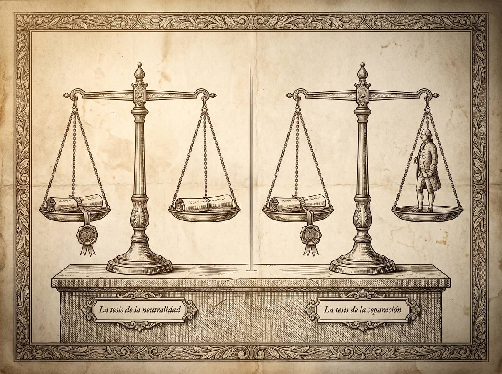

Subpunto 1.2.3 · Relaciones de Derecho y moral
Una ley válida que nadie debería obedecer
Es el debate más antiguo de la disciplina y el que más se discute mal. Casi siempre porque se confunden dos preguntas distintas: cómo reconocemos que algo es derecho, y si debemos obedecerlo. Separarlas es la condición para entender de qué se discute. Este apartado no cierra la disputa; muestra qué está en juego.
Prof. Carlos Eduardo Chica-Villacís Docente autor · Universidad Católica de Cuenca
La conducta humana no está regida por un solo orden de mandatos, sino por varios que se superponen. En el subpunto anterior quedaron distinguidos con los cuatro criterios de García Máynez: las normas jurídicas son las únicas bilaterales, externas, heterónomas y coercibles a la vez. Las morales son unilaterales, internas, autónomas e incoercibles.
Con esa distinción hecha, aparece el problema de fondo. Y no es empírico: no se pregunta si las leyes de un país reflejan los valores de su población.
Garzón Valdés lo sitúa donde corresponde: el debate empieza cuando se reflexiona sobre la denotación de la palabra «derecho», es decir, sobre qué sistemas normativos reales merecen ese nombre. Preguntar por la conexión entre derecho y moral es preguntar si la validez de una norma depende conceptualmente de su corrección moral.
Huerta Ochoa lo precisa con dos dimensiones. La dimensión real o fáctica es la expedición autoritativa de las normas y su eficacia social. La dimensión ideal o crítica es la legitimidad de sus contenidos. La pregunta es si basta con la primera, o si hace falta un mínimo de justicia material para que algo sea verdaderamente derecho.
Apartado elaborado a partir de Cárdenas Gracia (2010), Garzón Valdés (1990) y Huerta Ochoa (2024).Aquí está la distinción que evita que la discusión se convierta en una pelea de palabras. Garzón Valdés separa dos tesis que suelen tratarse como una sola.

Es una posición conceptual: el concepto de derecho debe definirse de forma valorativamente neutra, sin incorporar elementos morales. Garzón Valdés, citando a Hoerster, explica que meter exigencias morales en la definición restringe de forma inadmisible lo que la palabra «derecho» puede denotar.
La razón es metodológica. Existen sistemas jurídicos que de hecho son injustos. Si reservamos la palabra «derecho» solo para lo justo, nos quedamos sin herramienta para describir y estudiar los regímenes despóticos.
Es una posición práctica: que algo sea jurídicamente válido no resuelve la cuestión de si hay que obedecerlo. Todo mandato oficial debe someterse a un examen moral independiente.
Por qué confundirlas arruina el debate. Los críticos del positivismo suelen acusar a los positivistas de indiferencia ética: dan por hecho que quien defiende la neutralidad conceptual está legitimando al tirano. Es un error, y grave.
Kelsen y Hart defienden la neutralidad precisamente para preservar la capacidad crítica del ciudadano. Si derecho y moral se funden conceptualmente, se corre el riesgo de dar al derecho positivo un halo moral que no le corresponde, y de inducir a creer que lo legalmente válido es por eso mismo moralmente obligatorio. Deslindar las dos tesis es lo que permite criticar al poder sin perder claridad.
Apartado elaborado a partir de Garzón Valdés (1990), que cita a Hoerster.Hart sostiene que distinguir el derecho que es del derecho que debe ser tiene un valor intelectual y moral que no conviene perder. Y para responder a quienes afirman que derecho y moral se funden inevitablemente en el trabajo del juez, introduce un análisis que se ha vuelto clásico.
Las normas se expresan en palabras comunes que tienen un núcleo de significado claro. En el ejemplo de la ordenanza que prohíbe introducir «vehículos» en un parque, el automóvil está dentro sin discusión. Ahí el juez solo subsume.
Después vienen los casos que el legislador no anticipó: bicicletas, patines, coches de juguete, un avión de exhibición. En esa franja gris las palabras ni se aplican obviamente ni están obviamente excluidas. El juez tiene que decidir valorando qué debería hacer la norma.
Los críticos iusnaturalistas concluían que ahí se produce una intersección necesaria entre derecho y moral. Hart lo refuta con una distinción fina: la palabra «debería» no remite necesariamente a un juicio moral, sino simplemente a la presencia de un estándar de crítica.
La discusión deja de ser académica cuando se enfrenta a las leyes del régimen nazi.
Radbruch, tras la experiencia de la tiranía, abandonó su escepticismo positivista anterior. Sostuvo que la sumisión de los juristas alemanes al lema la ley es la ley facilitó que el régimen usara el aparato judicial para cometer atrocidades. Propuso entonces que una norma formalmente válida, si contradice la justicia de manera insoportable, pierde su naturaleza jurídica.
Huerta Ochoa precisa que la fórmula tiene en realidad dos partes. La fórmula de la insoportabilidad libera al juez del deber de aplicar el derecho positivo cuando la injusticia alcanza un grado intolerable. La fórmula de la negación establece que las normas que deliberadamente no pretenden realizar la igualdad carecen por completo de naturaleza jurídica.
En el extremo opuesto del positivismo analítico está Finnis. Para él la filosofía del derecho no es un saber neutro: depende directamente de la ética y la filosofía política, y pertenece a la filosofía de la razón práctica — el uso de la inteligencia para dirigir razonablemente la conducta libre hacia el florecimiento humano.
El derecho positivo cumple para Finnis una función instrumental indispensable: dar respuestas determinadas y previsibles a la vida social, y proteger al débil de su debilidad.
Para explicar el derecho injusto sin contradecirse, recurre a una herramienta de la lógica clásica: una palabra puede tener varios significados que remiten todos a un caso central.
La disputa contemporánea ha dejado atrás las caricaturas. Huerta Ochoa señala que ya no se trata de elegir entre iusnaturalismo teológico y positivismo ideológico. El estado actual se refleja en el no positivismo incluyente, asociado a Alexy.
Esta posición sostiene que sí hay vinculación necesaria entre validez jurídica y corrección moral, pero se separa del iusnaturalismo clásico en un punto decisivo: no ancla la moral en la naturaleza humana, sino en una pretensión de corrección que toda autoridad formula al emitir una norma.
Su rasgo definitorio es una solución intermedia. Las deficiencias morales de una norma no le quitan automáticamente la validez: sigue siendo derecho válido, pero derecho jurídicamente defectuoso, que el sistema debe corregir. La invalidez absoluta queda reservada a la injusticia extrema, donde se aplica la cláusula de Radbruch.
Apartado elaborado a partir de Huerta Ochoa (2024), que expone a Alexy.| Seguridad jurídica | Justicia material | |
|---|---|---|
| Qué defiende | Que la validez se identifique por hechos sociales y fuentes autoritativas claras. | Que la validez última no puede desvincularse de las exigencias éticas. |
| Qué protege | La previsibilidad de las conductas, la estabilidad del orden y el límite a la discrecionalidad del juez, que en democracia no debe erigirse en legislador moral. | La dignidad de la persona, legitimando que los tribunales inapliquen el derecho extremadamente injusto para que el Estado no sea una maquinaria de opresión formal. |
| Qué arriesga | Que el aparato judicial acabe amparando atrocidades legalmente impecables. | Que cada juez decida según su propia moral y la ley deje de ser previsible. |
La disputa contemporánea no busca aniquilar uno de los dos extremos. Busca cómo un Estado democrático articula un equilibrio que preserve la lealtad a la ley escrita sin abdicar de la lealtad a la justicia.
Si me llaman a resolver bajo una ley formalmente aprobada cuyo resultado vulnera de manera flagrante los derechos de un ciudadano, ¿aplico la norma para salvaguardar la certeza del derecho y la división de poderes? ¿O declaro su invalidez apelando a la dignidad humana, asumiendo que la validez material está condicionada por una pretensión de justicia?
Desde el aula
«Este es el apartado donde más veces he visto discutir mal, y casi siempre por la misma razón: se mezclan las dos tesis que Garzón Valdés separa.
Cuando alguien diga en clase que los positivistas justificaron el nazismo, párenlo y pregúntenle a cuál de las dos tesis se refiere. Porque Hart —positivista— sostiene que aquellas leyes eran derecho válido y que eran demasiado inicuas para obedecerlas. No está justificando nada: está diciendo que llamar «no derecho» a una ley atroz no la vuelve menos atroz, y sí nos deja peor equipados para denunciarla.
Fíjense en lo que hay debajo de la discusión, que es lo que de verdad importa. Los dos bandos temen algo distinto. El positivista teme al juez que decide según su conciencia y hace impredecible la ley. El no positivista teme al juez que aplica la atrocidad y se escuda en que la ley era la ley. Los dos miedos están fundados, y los dos tienen ejemplos históricos a su favor.
Por eso no hay respuesta de manual. Lo que sí pueden exigirse es saber, cuando defiendan una posición, cuál de los dos riesgos están aceptando correr.»